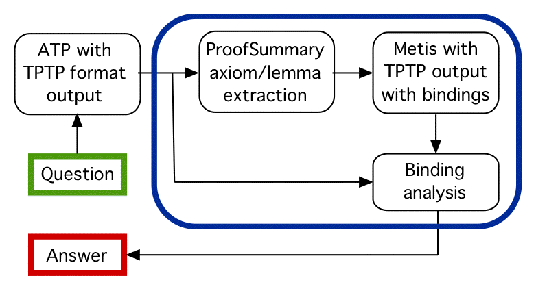

One Answer Extraction by Proof Analysis

- Use a (state-of-the-art) ATP system to produce a
TPTP format proof
- Extract answer variable bindings if available, else ...
- Extract axioms or lemmas from proof
to form new problem
- Can be much easier than original
- Reprove using Metis
- Metis proofs report
variable bindings
- Note verification effect
- Extract answer variable bindings from Metis proof
- "Unlikely" to be a different answer from original